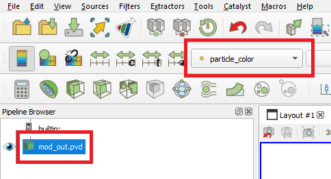
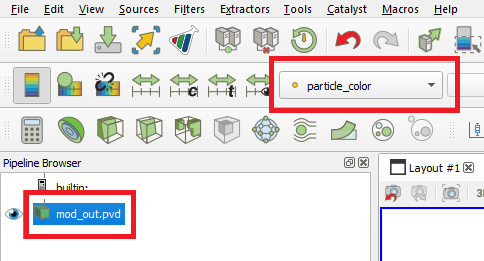

Small Scale Rotating Drum Postprocessing#
This is an example of how to post-process results obtained in the Small scale rotating drum example using lethe_pyvista_tools, a Python module based on PyVista, built to facilitate the reading of Lethe results using Python.
Important
This example uses the DEM files of the Small scale rotating drum example.
Warning
Details about installing the module or using it without installing it are available on here.
Features#
DEM simulation
Post-processing using Python, PyVista, lethe_pyvista_tools, and ParaView.
Files Used in This Example#
Parameters file for particle insertion:
examples/dem/3d-small-scale-rotating-drum/packing-rotating-drum.prmParameters file for drum rotation:
examples/dem/3d-small-scale-rotating-drum/small-rotating-drum-dem.prmPython module for Lethe data post-processing:
contrib/postprocessing/lethe_pyvista_toolsPython script using module for rotating drum post-processing:
examples/postprocessing/small-scale-rotating-drum-postprocessing/example_small_rotating_drum.py
Description of the Case#
In this example, we illustrate the mixing inside a rotating drum by coloring the particles according to their radial position right after their full packing. To do so, we post-process Lethe-DEM data using Python, PyVista, lethe_pyvista_tools, and ParaView.
Additionally, we calculate the mixing index using the Nearest Neighbors Method (NNM) [1] and Doucet method [2, 3].
The DEM files used in this example are obtained following the Small scale rotating drum example.
Note
It is not necessary to use all mentioned tools, but they are used in this example to show different ways to process the data according to user’s need.
Python Code#
Please, read this documentation before jumping to the following steps.
Constructing the Object#
The first step is to create an object to receive the data. In the present case, the object is called particles.
particles = lethe_pyvista_tools(case_path = ".", prm_file_name = "small-rotating-drum-dem.prm", pvd_name = "out.pvd", prefix = "", n_procs = None)
Here, the constructor lethe_pyvista_tools receives three arguments: case_path, prm_file_name, and the name of the .pvd file generated by the simulation. In the above code line, "." means that the case_path is the path where we currently are, but it can be any path where the case is. The prm_file_name argument takes "small-rotating-drum-dem.prm". The constructor can take 3 other arguments: first, last, and step, standing for the first and last time-steps to be read and the interval between the time-steps, respectively. By default, first = 0, step = 1, and last is the last time-step of the data.
Important
The special n_procs parameter controls the number of cores used in the post-processing routine. By default, it is set to None. If no other value is provided, the n_procs will be the number of CPUs on your machines.
Note
If we set first = 2, particles.time_list[0] will return the time corresponding to the second time-step. In all situations from now on, everytime we refer to a time-step, it will correspond to a dataset.
Tip
Together with the object particles, lethe_pyvista_tools creates a dictionary with all parameters in the .prm file. To access the parameter, we can use particles.prm_dict['$NAME_OF_THE_PARAMETER']. In the present case for example, the diameter of the particles can be easily printed using print(particles.prm_dict['diameter']). This can be useful for post-processing routines with multiple simulations.
Note that a list of values is returned when there is more than one parameter with the same name in the .prm file. The list is sorted according to parameters’ occurrence.
This command will also read all information necessary to read the data from the pvd file. To ensure that no original data will not be lost during the post-processing, on calling the constructor, copies of the .pvd and all .pvtu files are created with a given prefix. This parameter can be added to lethe_pyvista_tools and is empty by default. If you wish to work with the original .pvtu and .pvd files, just use prefix = "". If you want to create another file to prevent the original one from being modified, just change the prefix and all files will be named according to it. In this case, for example, we have used prefix = "mod_".
The read_lethe_to_pyvista reading function assigns the datasets of each time-step to the object particles. Each time-step corresponds to a PyVista dataset, and can be accessed using particles.df[$TIME-step_NUMBER].
Important
Since this is a post-processing module, we can only have access to data that was previously output. If one needs more time resolution than the data in hand, the simulation must be reran with a smaller time-step
Creation of a New Array#
To color the particles according to their position, we use the function modify_array, which takes the following arguments:
reference_array_name: Name of the array used to sort the data and identify the particles at all time-steps. Other arrays, such asTypeor any other array, can be used for this. By default:"ID"array_name: Name of the new array. If there is an array with the same name, it will be rewritten according to the other arguments. By default:"new_array"restart_array: IfTrue, givesstandard_valueto the entire array before applying the modifications to it. If one wants to modify part of the array keeping the rest intact, it must be set asFalse. By default:Falsecondition: Takes a string and uses it in an if condition to modify the array. Variables accepted includex,y,z,u,v,w,t, and any other array (IDfor example). It also accepts a combination of them, such as"x*w**2 + t > 2 and ID > 0". By default:""array_values: New values to the array. This argument accepts a single value (which will be repeated to all data respecting the givencondition), a NumPy array, or Python list (with the same length (len) of all other arrays inparticles.df), or a string such as"2*x + t"(working just like theconditionargument). By default:0standard_value: Ifrestart array = Trueor the array is a completely new array, thestandard_valuewill be plugged to the entire array before modifying it. By default:0time_dependent:modify_arraycan be time dependent or not. If setTrue,conditionwill be tested to each of the time-steps, while if it isFalse, it will be applied using thereference_time_stepinstead, and the modification will be just replicated to the other time-steps. By default:Falsereference_time_step: Reference time-step to which the modification will be applied. Iftime_dependent = False, the result of the modificaition applied toreference_time_stepwill be simply replicated to the others. By default:0
Important
As explained in the previous subsection, reference_time_step only refers to time-steps that were read into the code using read_lethe_to_pyvista.
The following block of code creates an array named particle_color using the modify_array function, assigning 1 to all particles with radial position \(> 0.025\) at the end of the packing (40th time-step):
condition = "(y**2 + z**2)**(1/2) > 0.025"
particles.modify_array(array_name = "particle_color", condition = condition, array_values = 1, reference_time_step = 40)
Since the rotating drum is placed along the \(x\) axis, we use \(\sqrt{y^2 + z^2}\) to assess the radial position of particles.
To create an additional layer of particles with different colors, we use the same function again with a different condition.
condition = "(y**2 + z**2)**(1/2) > 0.04"
particles.modify_array(array_name = "particle_color", condition = condition, array_values = 2, reference_time_step = 40, restart_array = False)
This time, we set restart_array = False to guarantee it is not going to affect the previous modification to the array.
Note
If we applied the second condition first, since conditions would overlap, intead of 3 layers of particles we would have only two.
Visualizing the Results#
We have two visualization options. One would be the PyVista visualization tools, such as PyVista Plotter. The other option is to use ParaView.
PyVista Visualization#
To visualize particle data using PyVista, first we need to create a single particle with diameter 1 and a given angular resolution:
sphere = pv.Sphere(theta_resolution=50, phi_resolution=50)
The next step is to use this object as base to represent all particles:
particle_glyph = particles.get_df(0).glyph(scale='Diameter', geom = sphere)
Here, we are using the first time-step of the data (particles.get_df(0)) as example. To access the full data as a PyVista dataset, we use the .get_df($STEP_NUMBER) function. It can be used to store data into variables, such as variable = particles.get_df(0).
Now that particles are created, we can visualize them:
plotter = pv.Plotter()
plotter.add_mesh(particle_glyph, scalars = "particle_color")
plotter.show()
This will open one iteractive window such as this one:

Tip
It is possible to create movies with PyVista looping through time-steps.
ParaView Visualization#
Since all modifications are saved to the new .pvd and .pvtu files, the results of the post-processing can be easily opened on ParaView, using the generated files.
 

Mixing Index#
We used two methods to calculate the mixing index of the rotating drum:
Nearest Neighbors Method#
One example of application of the modify_array method is on the calculation of the mixing index using the Nearest Neighbors Method (NNM) [1]. To do so, we first need to split the domain in half. Since we are interested on working with the radial mixing, first we need to calculate the cylindric coordinates of each particle:
particles.get_cylindrical_coords(radial_components = "yz")
Given the radial components, this method assigns ['points_cyl'] to the object particles. The coordinates \([0, 1, 2]\) are \([r, \theta, Z]\), respectively
To help us finding where to split the domain, we will also find the radial coordinate of the center of mass of the particles at reference_time_step = 40:
r_center_mass = np.mean(particles.get_df(40)['points_cyl'][:, 0])
Now we can split the domain:
condition = f"(y**2 + z**2)**(1/2) > {r_center_mass}"
particles.modify_array(array_name = "particle_color", condition = condition, array_values = 1, restart_array = True, reference_time_step = 40)
Note
We need to set restart_array = True since we are doing a new split on the particles using the same array_name = 'particle_color'.
The following method is used to find the 15 nearest neighbors of each particle:
particles.get_nearest_neighbors(return_id = True, n_neighbors = 15)
To get the indice and the position of the nearest neighbor (0) of particle 2 at the 5th time-step, the following can be used:
neighbor_index = particles.get_df(5)['neighbors'][2][0]
print(particles.get_df(5).points[neighbor_index])
It is also possible to print the neighbor’s ID and its distance to particle 2
print(particles.get_df(5)['neighbors_id'][2][0])
print(particles.get_df(5)['neighbors_dist'][2][0])
All set, now we can calculate the mixing index using NNM and store it in particles.mixing_index_nnm:
particles.mixing_index_nearest_neighbors(reference_array = "particle_color", n_neighbors = 15, mixing_index_array_name = "mixing_index_NNM")
particles.mixing_index_nnm = particles.mixing_index
This method calculates the mixing index for each particles and stores it in an array named according to the parameter mixing_index_array_name. This array can be used for vizualization.

Doucet Mixing Index#
Similar to NNM, we are interested in the mixing index results using cylindrical coordinates. Calculating the Doucet mixing index is as simple as running:
particles.mixing_index_doucet(reference_time_step = 40, use_cyl = True, increasing_index = True, normalize = True)
particles.mixing_index_doucet = particles.mixing_index
Usually, Doucet mixing index decreases with mixing, but for comparison with NNM purposes we do increasing_index = True. Doucet method does not need any sort of splitting of particles, so it is not necessary to split them previous to using this method.
Results#
Following we present one video of the full simulation with particles colored by their initial position.
The simulation results show that the layers in red and green, that is, particles close to the walls, tend to mix faster than the ones in the center.
The poor mixing of the particles is confirmed with NNM and Doucet mixing indices. To plot both indices as a function of time:
plt.plot(particles.time_list[40:], particles.mixing_index_nnm[40:], '-b', label = "Generalized NNM")
plt.plot(particles.time_list[40:], particles.mixing_index_doucet[40:], '--k', label = "Doucet")
plt.plot(particles.time_list[40:], np.repeat(1, len(particles.time_list[40:])), ':r')
plt.xlabel("Time [s]")
plt.ylabel("Mixing index [-]")
plt.xlim(particles.time_list[40], particles.time_list[-1])
plt.ylim(0, 1.1)
plt.legend()
plt.savefig("./mixing_index.png")
plt.close()
For set rotational speed = 2, the following is observed:
As shown, neither of the mixing indices point to a full mixing of the particles, even at higher simulation times. NNM is always above Doucet, indicating that the main mixing component must not be the radius. Higher rotating velocities can improve results.
Possibilities for Extension#
Give a different
conditionto create theparticle_colorarrayUse the
lethe_pyvista_toolsfor a different problem, modifying theconditionaccordinglyUse the tools in the PyVista official repository to create screenshots, movies, and plots with the data.
Change the rotation velocity and track the mixing indices.